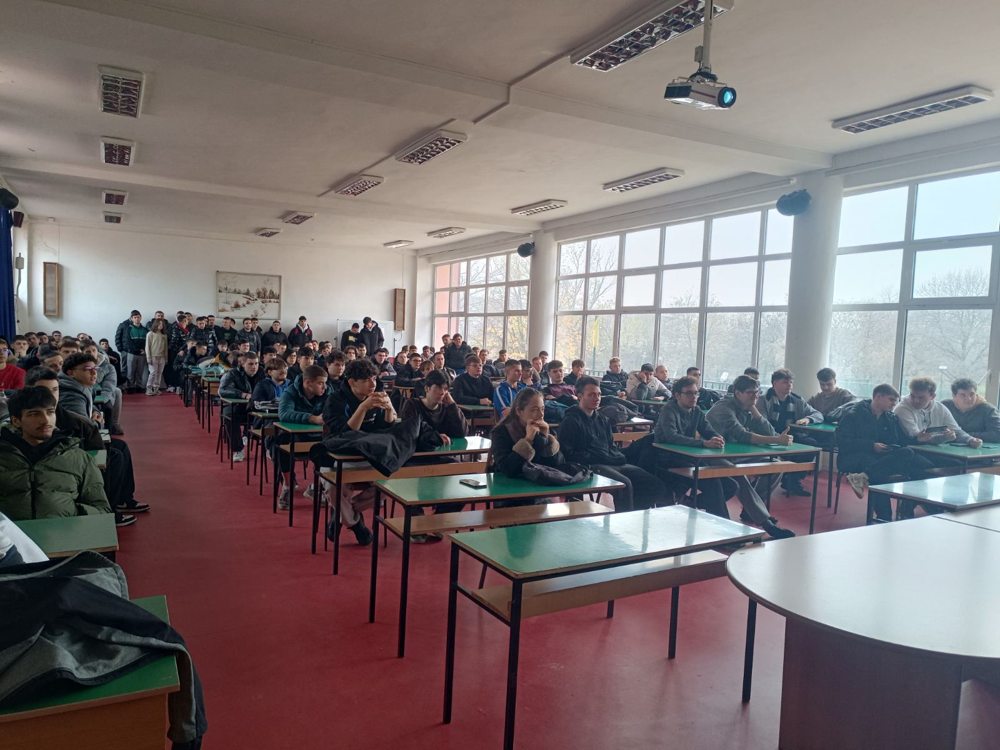
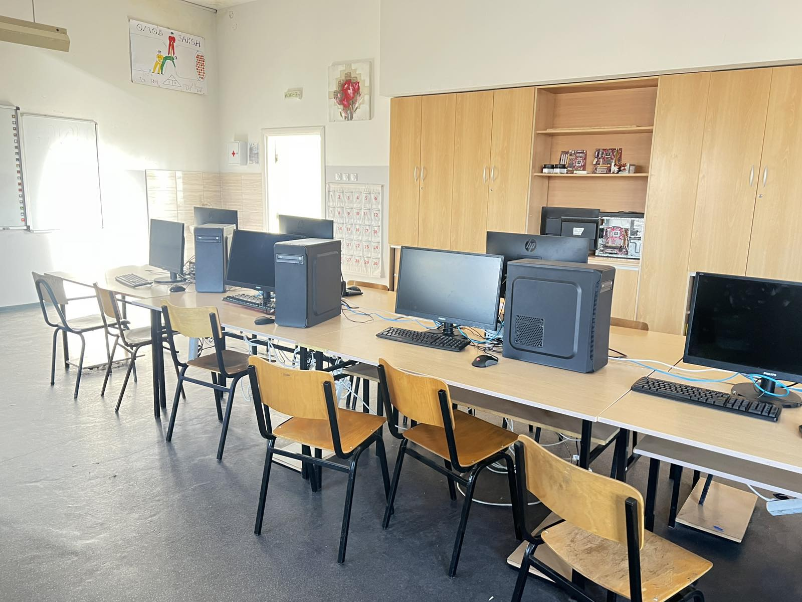
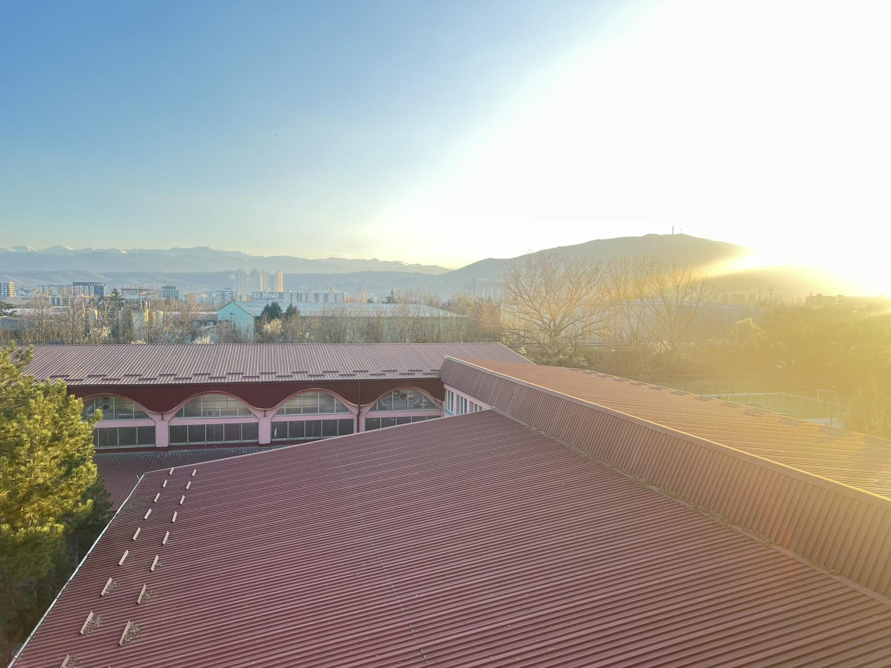
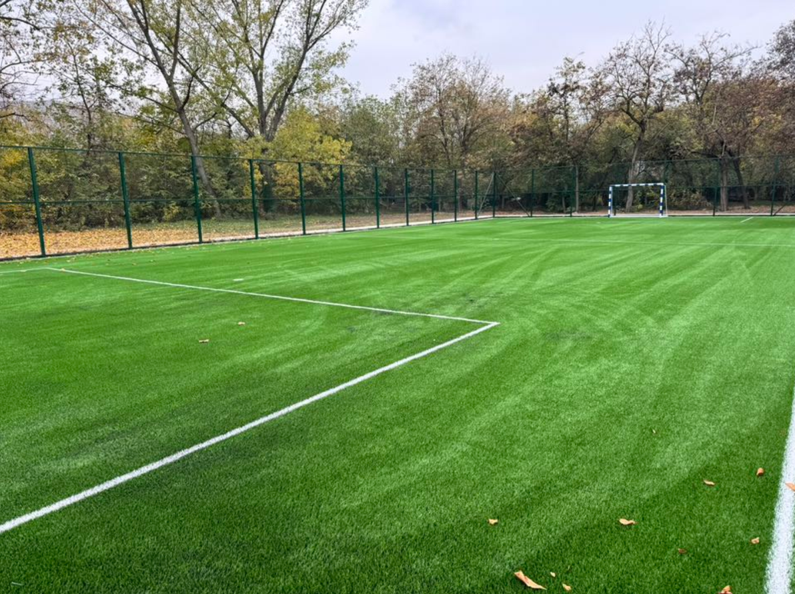
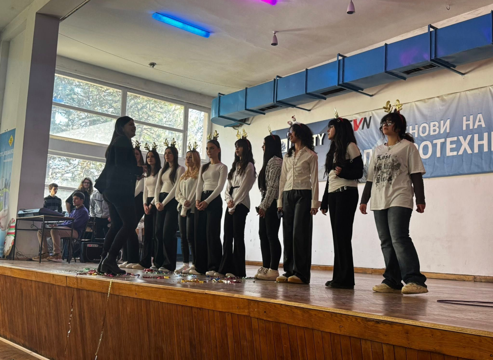
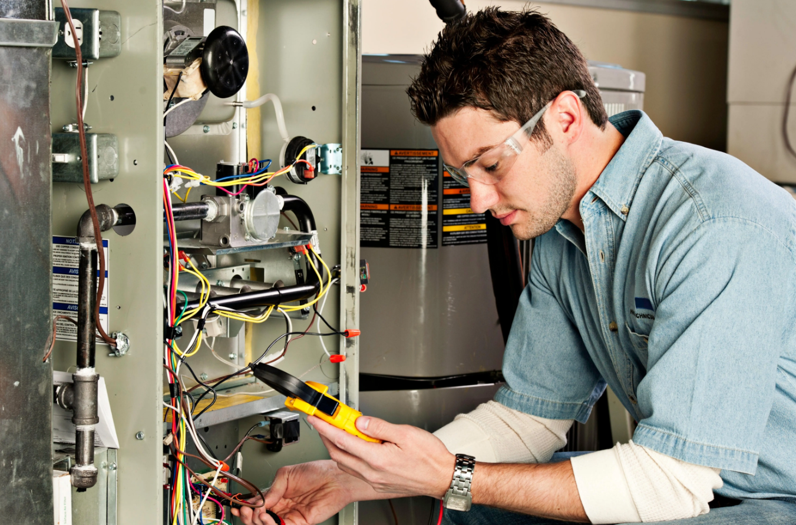
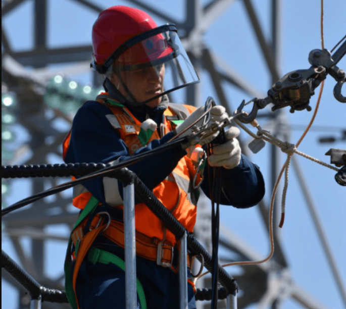

Електронски приказ за наставата во нашето училиште
Кабинети посветени со Европски стандарди
Во СЕТУ „Михајло Пупин“ воспитно-образовната работа се реализира во 6 кабинети (кабинет за интерактивна настава, кабинет за настава на далечина со можност за видео-конференциска врска, кабинет по физика, кабинет по информатика, кабинет по техничко комуницирање, кабинет по енергетски постројки), вкупно 17 училници од кои 5 се училници со компјутерска опрема, потоа 6 лаборатории (лабораторија за автоматика и роботика, лабораторија за електротехника, лабораторија за обновливи извори на енергија и енергетска ефикасност, лабораторија за електрични инсталации и електрично осветлување, две лаборатории за електроника и телекомуникации, две лаборатории за мултимедија), 10 работилници за практична настава, 1 читална, 1 библиотека, 1 просторија за кариерен центар, 1 просторија за прием на родители, наставничка канцеларија, две фискултурни сали, Работилница на Реалната компанија и други простории во функција на наставата во форма на училници или помошни простории.

Опремена со најнови клупи и столици,озвучни системи и капацитет над 200+ ученици

Современ кабинет со 19 компјутери, сопствен сервер и брза интернет конекција.

Малата сала и големата сала се гледаат од овој поглед

Простор од 150m² поволен за учениците што обожаваат фудбал.

Простор наменет за работи поврзани со нашите образовни профили и културно-уметнички таленти.
Опремена со најнови клупи и столици,озвучни системи и капацитет над 200+ ученици
Современ кабинет со 19 компјутери, сопствен сервер и брза интернет конекција.
Малата сала и големата сала се гледаат од овој поглед
Простор од 150m² поволен за учениците што обожаваат фудбал.
Простор наменет за работи поврзани со нашите образовни профили и културно-уметнички таленти.
Опремена со најнови клупи и столици,озвучни системи и капацитет над 200+ ученици
Современ кабинет со 19 компјутери, сопствен сервер и брза интернет конекција.
Малата сала и големата сала се гледаат од овој поглед
Простор од 150m² поволен за учениците што обожаваат фудбал.
Простор наменет за работи поврзани со нашите образовни профили и културно-уметнички таленти.
Опремена со најнови клупи и столици,озвучни системи и капацитет над 200+ ученици
Современ кабинет со 19 компјутери, сопствен сервер и брза интернет конекција.
Малата сала и големата сала се гледаат од овој поглед
Простор од 150m² поволен за учениците што обожаваат фудбал.
Простор наменет за работи поврзани со нашите образовни профили и културно-уметнички таленти.
Информации за упис, полагање испити и издавање дипломи

Струка: електротехничка (програмите се исти како и редовните ученици)

Струка: електротехничка (програмите се исти како и редовните ученици)
За пријавување во вонредни ученици кандидатот најпрво треба да пополни барање за упис во I, II, III или IV година:
Покрај барањето кандидатот е потребно да ги донесе и следниве документи:
Цена: 5000 ден. (еднократна уплата)
Цел на дознака: Упис во (I, II, III или IV) година.
Уплатницата треба да ја пополните како на сликата подолу:

Треба да се уплати административна такса од 50 денари.
Уплатницата треба да ја пополните како на сликата подолу:

Откако кандидатот ќе се запише во четврта година може да се пријави за полагање на испити. Во текот на една учебна година предвидени се шест испитни сесии (октомври, декември, февруари, април, јуни и август).
Кандидатот треба да ги донесе сите потребни документи до крај на претходниот месец кога има испитна сесија. Испитите се реализираат од 20 до 30-ти во месецот. Термините и комисиите се истакнуваат на Огласната Табла.
Напомена: Кандидатот може да пријави највеќе три испити во една испитна сесија.
Цена: Варијабилна (Зависи од бројот на предмети. Цената за еден предмет чини 800 ден. Пример: три предмети = 2400 ден.)
Цел на дознака: Пријавување на испити за вонредни

По завршувањето на испитите од четврта година, кандидатот ќе може да полага завршен испит или државна матура.
Цена за свидетелство: 500 ден.
Цена за диплома: 500 ден.
Цел на дознака: Издавање на свидетелство/диплома

Струката е со тригодишно образование и содржи 9 стручни предмети од електротехниката и енергетиката. Во неа има 600 часа практична настава во солидно опремени кабинети со сите неопходни инструменти и нагледни средства. Во програмата се опфатени:

Можности за вработување: Механичар за поправка на електрични апарати, во сопствен бизнис или во фирми од таа дејност.

Можности за вработување: Изведувач на електрични инсталации и монтер на електрични постројки, во сопствен бизнис или во фирми од таа дејност (електродистрибуција, производни фирми, градежни фирми...)
Струката е со тригодишно образование и содржи 9 стручни предмети од електротехника и енергетика. Во неа има 600 часа практична настава во солидно опремени кабинети со сите неопходни инструменти и нагледни средства. Во програмата се опфатени:
По завршувањето на тригодишното образование, учениците може да продолжат во четиригодишно образование, но претходно мора да запишат и завршат вертикална проодност (премин).
Ученикот при пријавување за вертикална проодност (премин) треба да ги пополни и донесе следниве документи:
Треба да уплати уплатница на име на училиштето:
Цена: 2500 ден.
Цел на дознака: Пријавување на вертикална проодност (премин).
Уплатницата треба да ја пополните како на сликата подолу:
Треба да уплати административна такса од 50 денари:
Уплатницата треба да ја пополните како на сликата подолу:
Кандидатот кој се има пријавено за вертикална проодност (премин) треба да положи два стручни и три општообразовни предмети.
Aко кандидатот изучувал друг странски јазик испитот се полага во друго училиште каде што се предава тој странски јазик.
Доколку ученикот завршил тригодишно образование (Електричар- Електромонтер за електроенергетски мрежи) треба да ги полага следниве два стручни предмети:
Доколку ученикот завршил тригодишно образование (Електромеханичар) треба да ги полага следниве два стручни предмети:
Доколку ученикот завршил тригодишно образование (Електроинсталатер и монтер) треба да ги полага следниве два стручни предмети:
Во текот на една учебна година предвидени се шест испитни сесии (октомври, декември, февруари, април, јуни и август). Кандидатот треба да ги донесе во училиштето сите потребни документи наведени подолу од 1 до 10-ти во месецот кога има испитна сесија. Испитите се реализираат од 20 до 30-ти во месецот кога има сесија. Термините и комисиите за полагање на испитите ќе бидат истакнати на Огласната Табла во училиштето и на Огласната Табла на веб страната на училиштето.
Треба да уплати уплатница на име на училиштето:
Цена: Варијабилна (Зависи од бројот и типот на предмети што ќе ги пријави кандидатот. Ценовникот на предметите е: Македонски јазик и литература - 300ден., Англиски јазик - 300 ден., Математика - 300 ден., Автоматика - 1000 ден., Електрични апарати и уреди -1000 ден., Електроника - 1000 ден., Електрично осветление - 1000 ден., Електрични машини и погони - 1000 ден. ) На пример: Доколку кандидатот пријави два стручни и еден општообразовен предмет тогаш цената ќе биде 2300 ден.
Цел на дознака: Пријавување на испити за вертикална проодност (премин).
Уплатницата треба да ја пополните како на сликата подолу:
Треба да уплати административна такса од 50 денари:
Уплатницата треба да ја пополните како на сликата подолу:
Откако кандидатот ќе ги положи сите испити предвидени со вертикалната проодност (премин), истиот ќе може да се запише во четврта година. За таа цел ќе му бидат потребни следниве документи:
Треба да уплати уплатница на име на училиштето:
Цена: 5000 ден. (еднократна уплата)
Цел на дознака: Упис во четврта година.
Треба да уплати административна такса од 50 денари:
Откако кандидатот ќе се запише во четврта година може да се пријави за полагање на испити. Во текот на една учебна година предвидени се шест испитни сесии. Кандидатот треба да ги донесе во училиштето сите потребни документи од 1 до 10-ти во месецот. Испитите се реализираат од 20 до 30-ти. Идентитетот на кандидатот го утврдува испитната комисија преку Лична карта.
Напомена: Кандидатот може да пријави највеќе три испити во една испитна сесија.
Цена: Варијабилна (Цената на полагање на еден предмет чини 800ден. На пример: 3 предмети = 2400 ден.)
Цел на дознака: Пријавување на испити за вонредни
Треба да уплати административна такса од 50 денари:
По завршувањето на испитите од четврта година, кандидатот ќе може да полага завршен испит или државна матура.
Кандидатот треба да ги следи следните чекори:
Цена за свидетелство: 500 ден.
Цена за диплома: 500 ден.
Цел на дознака: Издавање на свидетелство/ диплома
Истражи ги најбараните електротехнички профили во државава!
Овој образовен профил содржи 23 стручни предмети со околу 400 часа практична настава и над 500 часа работа со компјутери. Наставата се одвива во 5 компјутерски училници. Во програмата се опфатени:
Програмирање, веб дизајн, одржување на компјутерски системи и автоматски системи во индустријата.
Овој образовен профил содржи 18 стручни предмети. Наставата се одвива во модерно опремени кабинети со компјутери, осцилоскопи и други електронски инструменти. Во програмата се опфатени:
Произодство на електронски склопови, сервисирање уреди, техничар во РТВ станици или телефонски компании.
Овој образовен профил содржи 21 стручен предмет со над 240 часа практична настава во солидно опремени кабинети со современи инструменти и нагледни средства. Во програмата се опфатени:
Инсталација и одржување, техничар во електростопанство, проектирање на инсталации и апарати.
Струка: Електротехничка
Кандидатите кои завршиле тригодишно образование во образовен профил Електромеханичар може да запишат Петти степен во образовниот профил Електромеханичар - Специјалист за електрични мерни инструменти и уреди.
Кандидатите кои завршиле четиригодишно образование во образовен профил Електроника и телекомуникации може да запишат Петти степен во образовните профили: Електроничар - специјалист за сервисирање на аудио и видео техника, Електроничар - специјалист за сервисирање на медицински електронски апарати и Електроничар - специјалист за сервисирање на мерни и управувачки уреди.
Кандидатите кои завршиле четиригодишно образование во образовен профил Енергетичар може да запишат Петти степен во образовните профили: Електроенергетичар - специјалист за електрични постројки, Електроенергетичар - специјалист за одржување, Електроенергетичар - специјалист за електрични мрежи.
Треба да уплати уплатница на име на училиштето:
Цена: 7000 ден.
Цел на дознака: Упис во петти степен
Треба да уплати административна такса од 50 денари:
Во текот на една учебна година предвидени се шест испитни сесии (октомври, декември, февруари, април, јуни и август). Кандидатот треба да ги донесе во училиштето сите потребни документи наведени подолу од 1 до 10-ти во месецот кога има испитна сесија. Испитите се реализираат од 20 до 30-ти во месецот кога има сесија. Термините и комисиите за полагање на испитите ќе бидат истакнати на Огласната Табла во училиштето и на Огласната Табла на веб страната на училиштето.
Напомена: Кандидатот може да пријави највеќе три испити во една испитна сесија.
Треба да уплати уплатница на име на училиштето:
Цена: Варијабилна (Зависи од бројот на предмети што ќе ги пријави кандидатот. Цената на полагање на еден предмет чини 800ден. На пример: Доколку кандидатот пријави три предмети тогаш цената ќе биде 2400 ден.)
Цел на дознака: Пријавување на испити за петти степен
Треба да уплати административна такса од 50 денари: